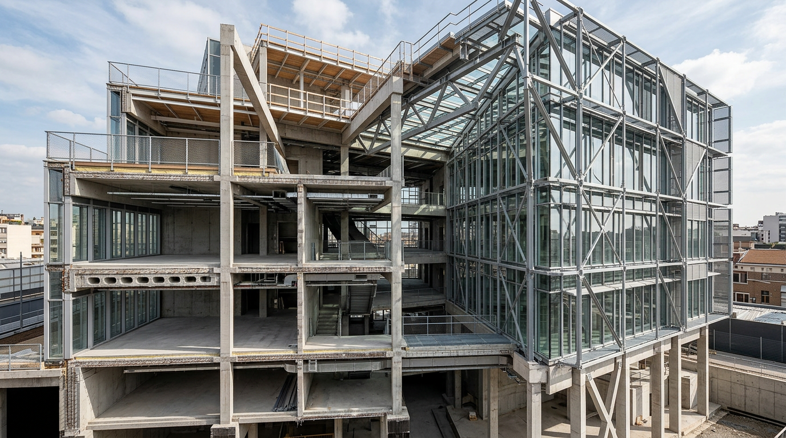
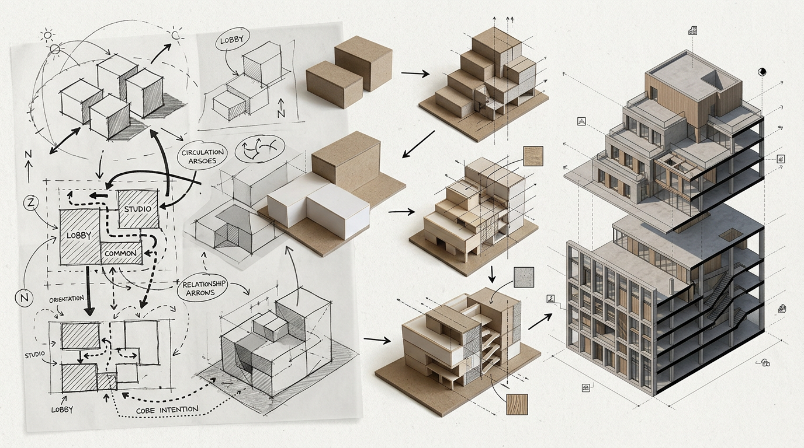
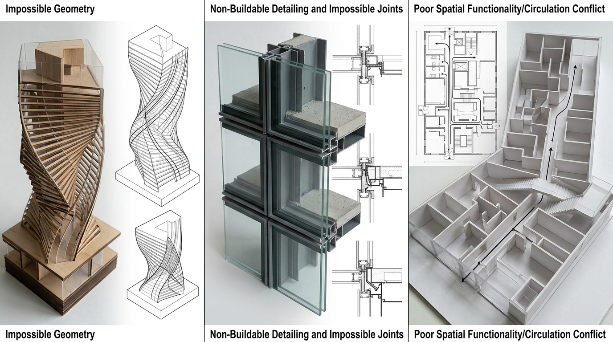

Prompts detallados por día. Imágenes generadas: días 1-3 (Nano Banana 2).
| Día | Pilar | Gancho | Prompt imagen (detallado) | Preview |
|---|---|---|---|---|
| 1 | Debate | El render ya no impresiona. La lógica sí. | Architectural hero visual of a complex contemporary building project, no people, no text. Focus on tectonic logic: exposed structural grid, section-like cut revealing beams/columns/slabs, material junctions, facade layers, circulation logic, technical clarity. Photorealistic architectural editorial style, dramatic but clean daylight, high detail construction realism, 16:9 composition, premium LinkedIn architecture post aesthetic. |  |
| 2 | Proceso | No empezamos por Revit. Empezamos por intención. | Architectural process storytelling visual, no people, no text. Show evolution from intention to system: left side hand-drawn conceptual sketch overlays (bubbles, arrows, massing diagrams, zoning logic), center transitional design studies, right side early BIM-like volumetric model hints. Emphasize design thinking workflow and spatial intent before software. Photorealistic studio-board style with paper texture and technical precision, 16:9, high detail. |  |
| 3 | Educativo | 3 errores al usar IA en arquitectura | Educational architecture critique visual, no people, no text. Single composition divided into three panels representing mistakes: (1) impossible geometry, (2) non-buildable detailing and impossible joints, (3) poor spatial functionality/circulation conflict. Use realistic architectural project boards and model fragments to make errors obvious visually. High-end editorial realism, neutral daylight, 16:9, sharp technical detail. |  |
| 4 | Caso real | Así comprimimos semanas en días | Architectural case-study visual, no people, no text. Timeline-style composition showing project acceleration from concept to coordinated documentation with milestones and model iterations, clean technical atmosphere, photorealistic architecture workflow board, 16:9. | Pendiente |
| 5 | Opinión | La IA no te quita trabajo. Te quita excusas. | Strong architecture opinion visual, no people, no text. Contrast between disorganized project chaos and structured high-performance architecture pipeline with precise deliverables. Photorealistic editorial scene, 16:9. | Pendiente |
| 6 | BTS | Lo que no se ve del proyecto | Behind-the-scenes architecture workflow visual, no people, no text. Layered process artifacts: detail sheets, material specs, coordination notes, mockups, structural markups. 16:9 photoreal editorial. | Pendiente |
| 7 | Roundup | Resumen semanal: qué funcionó | Architecture weekly review board visual, no people, no text. Performance dashboard feeling using project snapshots, iteration cards, decision matrix graphics without readable text. 16:9. | Pendiente |
| 8 | Masterplan | Un masterplan es una secuencia, no un dibujo. | Large-scale masterplan sequence visual, no people, no text. Urban phasing, mobility layers, open-space hierarchy and build stages shown as coherent progression. Photoreal + diagram hybrid, 16:9. | Pendiente |
| 9 | Educativo | Cómo validar forma orgánica en 20 min | Organic architecture validation visual, no people, no text. Show fast form-testing workflow with structural sanity checks and envelope logic. 16:9 technical editorial. | Pendiente |
| 10 | Caso real | Del boceto al sistema | Transformation visual from initial architectural sketch to coordinated system model and construction logic, no people, no text, 16:9. | Pendiente |
| 11 | Debate | ¿La arquitectura paramétrica envejece mal? | Parametric facade debate visual, no people, no text. Show timeless vs trend-driven parametric outcomes in one frame. 16:9. | Pendiente |
| 12 | BTS | Qué descartamos y por qué | Architecture decision discard board visual, no people, no text. Rejected options with clear comparative rationale cues. 16:9. | Pendiente |
| 13 | Story | La reunión que cambió el proyecto | Project turning-point visual via redesigned scheme board and revised massing/plan logic, no people, no text, 16:9. | Pendiente |
| 14 | Roundup | Semana 2: señales de viralidad | Architecture content performance board style visual, no people, no text, showing high-performing project thumbnails and trend cues, 16:9. | Pendiente |
| 15 | Interiores | Bonito no basta: debe construirse. | Buildable interior architecture visual, no people, no text. Construction-ready details, joinery feasibility, lighting logic. 16:9. | Pendiente |
| 16 | Educativo | 5 reglas de lectura espacial | Spatial composition teaching visual, no people, no text. Axes, hierarchy, light and circulation logic represented graphically. 16:9. | Pendiente |
| 17 | Herramientas | AI + BIM + criterio humano | Architecture tools synergy visual, no people, no text. AI concept aid + BIM coordination + human judgment loop. 16:9. | Pendiente |
| 18 | Debate | ¿Photorealismo mata la crítica? | Photorealism vs critical architecture thinking visual contrast, no people, no text, 16:9. | Pendiente |
| 19 | Caso real | Cómo defendimos esta decisión con cliente | Architecture decision defense board visual with options and selected rationale cues, no people, no text, 16:9. | Pendiente |
| 20 | BTS | Versión 1 vs versión final | Before/after architecture refinement visual, no people, no text, 16:9. | Pendiente |
| 21 | Roundup | Lo más guardado esta semana | Top-saved architecture insights board visual, no people, no text, 16:9. | Pendiente |
| 22 | Oferta | Qué hacemos en ARCH-S (sin humo) | Studio capability visual showing architecture services pipeline and project typologies, no people, no text, 16:9. | Pendiente |
| 23 | Autoridad | Checklist pre-proyecto para evitar sobrecostos | Pre-project risk prevention visual with technical checkpoints, no people, no text, 16:9. | Pendiente |
| 24 | Caso | Antes de contratar, esto revisamos | Architecture due-diligence visual with site, regulation and feasibility checks, no people, no text, 16:9. | Pendiente |
| 25 | Debate | El cliente no compra renders. Compra certeza. | Certainty-driven architecture delivery visual, no people, no text, emphasizing clarity and buildability over cosmetics, 16:9. | Pendiente |
| 26 | Educativo | Cómo decidir entre 1, 2 o 3 niveles | Section-based decision visual comparing level strategies, no people, no text, 16:9. | Pendiente |
| 27 | Prueba social | Lo que más nos piden en DM | Architecture FAQ demand visual using recurring client request themes as icons/boards, no people, no text, 16:9. | Pendiente |
| 28 | Cierre mes | Qué aprendimos este mes creando en público | Monthly architecture learning synthesis visual, no people, no text, 16:9. | Pendiente |
| 29 | Evergreen | Guía rápida: AI para arquitectos en 2026 | Future-ready architecture AI workflow visual, no people, no text, 16:9. | Pendiente |
| 30 | Lead magnet | Te regalo mi estructura de post viral | Architecture content framework visual, no people, no text, clean modular board aesthetic, 16:9. | Pendiente |